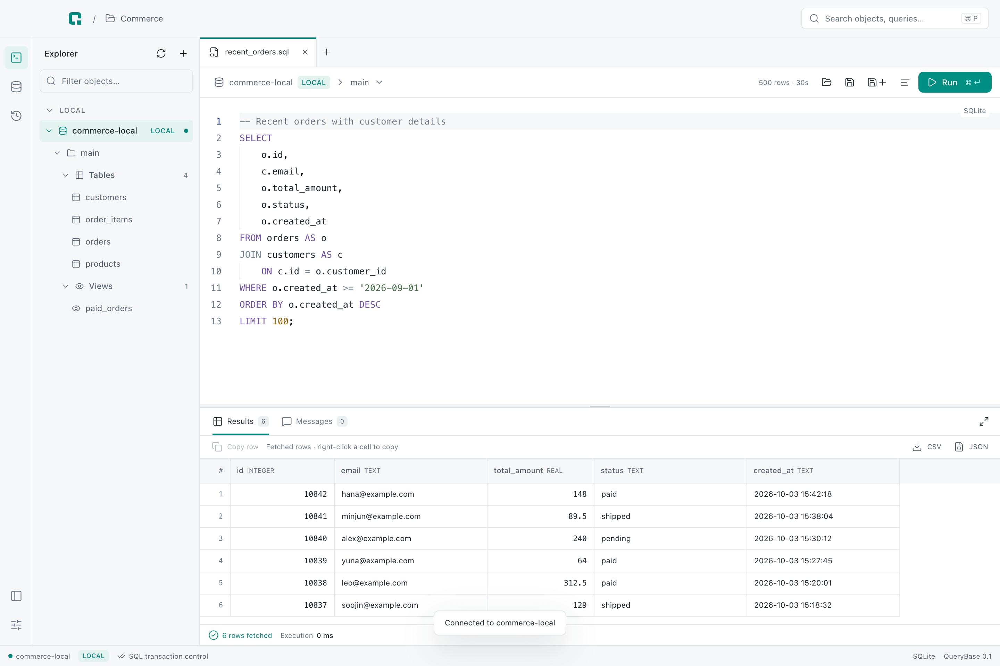

01 / EXPLORE
구조부터 한눈에.
연결한 데이터베이스의 스키마, 테이블과 컬럼을 탐색하세요. 객체의 DDL도 함께 살펴볼 수 있어요.
YOUR DATABASE WORKSPACE.
연결하고, SQL을 작성하고, 결과를 확인하세요.
매일의 데이터베이스 작업을 위한 데스크톱 앱, QueryBase.
Desktop app · 개발 중

서로 다른 데이터베이스.
익숙한 하나의 작업 공간.
연결에서 결과까지
데이터를 찾고, 질문을 쓰고, 답을 확인하는 일을
하나의 화면에서 이어가세요.
연결한 데이터베이스의 스키마, 테이블과 컬럼을 탐색하세요. 객체의 DDL도 함께 살펴볼 수 있어요.
테이블과 컬럼의 자동 완성으로 SQL을 작성하고, 선택한 영역이나 커서가 놓인 문장을 실행하세요.
컬럼과 결과를 그리드에서 확인하세요. 조회한 행은 CSV나 JSON으로 내보내 다음 작업에 사용할 수 있어요.
오늘의 작업을 이어서
파일로 남기고, 기록에서 찾고,
내가 편한 화면으로 작업하세요.
SQL 파일을 열고 저장하세요. 편집 중인 초안과 작업 탭도 다시 이어갈 수 있어요.
실행했던 SQL과 결과 상태를 기록에서 확인하고, 필요한 쿼리를 다시 살펴보세요.
연결별 환경과 보호 수준을 구분해, 지금 작업하는 데이터베이스를 확인하세요.
한국어와 영어, 라이트와 다크 테마, 강조 색과 화면 밀도를 선택할 수 있어요.
QUERYBASE FOR DESKTOP
macOS, Windows, Linux를 위한 데스크톱 앱을 개발 중이에요.
다운로드와 지원 환경은 공개 배포 시 이곳에서 안내합니다.
아직 공개 배포 전입니다.
QueryBase는 데스크톱 데이터베이스 클라이언트예요. 이 페이지는 제품과 개발 중인 기능을 소개합니다.
현재 SQLite, PostgreSQL, MySQL, Oracle의 연결과 SQL 실행을 구현했어요. 공개 버전의 지원 범위와 환경은 배포 시 안내할 예정입니다.
현재 개발 중으로 공개 설치 파일은 아직 제공하지 않아요. 소개된 기능과 화면은 출시 과정에서 달라질 수 있습니다.